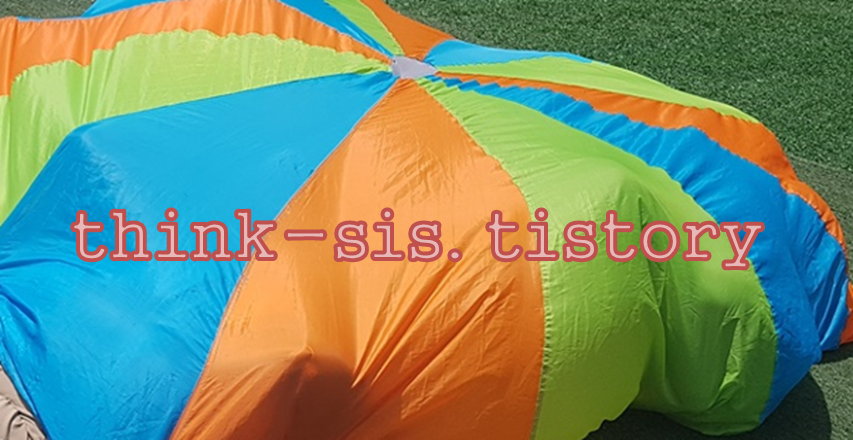

피아제 인지발달 4단계
인지발달은 순서대로 단계를 거쳐 진행되며, 점차 복잡성이 요구된다. 피아제(Piaget)의 인지발달은 다음과 같다.

1. 감각운동기
감각운동기(sensorimotor stage, 출생~2세경)는 영아의 생득적인 단순한 반사 행동을 하면서 물리적 사물과 상호작용을 통하여 지식을 얻게 되는 단계이다. 이 시기에 모든 행동은 감각(sensory)과 운동(motor)으로 자극에 대한 원초적 반사를 통하여 발견한다.
2. 전조작기
전조작기(preoperational stage, 前操作期, 2~7세경)는 언어가 급격히 발달하고 정신적 표상에 의한 사고능력도 증가하지만 조작능력에는 한계가 있는 단계이다. 조작은 수, 액체, 질량의 보존개념과 같은 논리적 관계를 이해하는 것으로, 아직 이러한 조작능력이 이루어지지 못한다. 이 단계는 논리적인 조작이 가능하지 않기 때문에 전조작기라고 부른다. 전조작기의 특징은 자기중심적 사고, 물활론(物活論), 상징적 기능, 타율적 도덕성, 직관적 사고의 특징이 나타난다.
전조작기 단계는 전개념적 사고(preconceptual stage)와 직관적 사고(intuitive stage)로 나뉜다. 전개념적 사고 단계(preconceptual stage)는 2세에서 4세경까지이며 조작적 사고가 거의 나타나지 않지만 초보적인 개념이나 추론이 가능하다. 그리고 직관적 사고 단계(intuitive stage)는 5세에서 7세경이며 조작적 사고가 어느 정도 가능하며 구체적 조작기로 넘어가는 전환기로 볼 수 있다.
3. 구체적 조작기
구체적 조작기(concrete operational stage, 7~12세경)단계에서는 전조작기에서 갖지 못한 가역성(可逆性)이라는 특성을 갖는 단계이다. 구체적 조작기는 관찰될 수 있는 구체적 사물을 다루는 데는 논리적이지만 가설적이고 추상적이고 복잡한 가설의 정신적 사고는 아직 미숙하다. 구체적 조작기에 나타나는 사고의 특징은 보존개념의 획득, 유목(類目)포섭 관계, 분류, 서열화를 할 수 있다.
4. 형식적 조작기
형식적 조작기(formal operational stage, 12세 이후~)는 새로운 상황에 직면했을 때 현재, 과거, 미래까지 시간을 초월하여 문제를 다룰 수 있는 단계이다. 이 시기는 문제해결을 위해 사전에 계획을 세우고, 체계적·과학적 · 추상적으로 해결책을 제시할 수 있다. 또 자신과 다른 사람들이 바라는 사고할 수 있다.
감각운동기 하위단계
인지발달 첫 단계 감각운동기는 원초적인 행동으로 자신의 감각과 신체움직임에 의해 의지한다. 피아제의 감각운동기는 다시 하위 6단계로 다음과 같이 구분한다.
1) 반사운동기 단계
반사운동기(reflex activity, 출생~1개월경) 동안 신생아는 단순한 빨기, 울기, 숨쉬기, 재채기, 잡기 등 생득적인 반응을 보인다. 이 기간 동안 환경에서 주어지는 자극을 받아들여 자신이 적응할 수 있는 내적 체계를 형성한다. 신생아는 타고난 반사행동을 통해 환경과 접촉하면서 의미있는 발달 방향으로 수정되어 간다.
2) 1차 순환반응기 단계
1차 순환반응기(primary circular reaction, 출생~4개월경)는 영아가 단순한 생물학적반사행동을 반복적으로 한다. 1차 순환반응은 환경이 주어지는 대로 학습하거나 획득한 것이 아니라 영아가 자신의 반복적인 행동을 발견하면서 신체를 탐구해 가는 과정이다. 이 시기에 장난감을 흔들거나 소리를 내면 고개를 그 방향으로 따라가는 신체나 동작을 인식하지만 보이지 않을 경우 관심이 없어진다.
3) 2차 순환반응기 단계
2차 순환반응기(secondary circular reaction, 4~8개월경)는 영아가 자신의 신체뿐만 아니라 주위 환경에 대한 인식의 시작으로 우연히 했던 돌이돌이, 잼잼 등 행위가 만족을 주었다면 똑같은 결과를 얻기 위해 행동을 반복한다. 이 시기에는 자신자신의 욕구 충족을 위하여 새로운 행동을 의도적하기 시작한다.
4) 2차 반응협응기 단계
2차 반응협응기(coordination of secondary reaction, 8~12개월경)는 어떤 목적을 달성하기 위해 이전에 획득한 여러 가지 도식을 새로운 상황에 사용한다. 이 시점에서 어떤 물체가 영아의 시야에서 사라지면 그 물체는 더 이상 존재하지 않는 것을 지각하는 대상영속성(object permanence)이 발달한다. 자신의 목표를 끊임없이 성취하기 위해 문제해결 방법을 생각하고, 방해가 되는 단순한 장애물은 제거하는 단순한 탐색을 위한 활동이다.
5) 3차 순환반응기 단계
3차 순환반응기(tertiary circular reaction, 12~18개월경)는 자신에게 주어진 결과에 단순하게 만족하지 않고 문제해결을 위한 여러 가지 행동을 시도한다. 이 단계는 의도적인 결과를 얻기 위해 흥미와 호기심을 나타내는 인지구조를 분화시켜 간다. 영아는 블록 장난감을 길게 늘려놓거나 높게 쌓아보는 등 다른 방법으로 활용하기 위하여 의도적으로 새롭게 재구성하여 다양하게 활용하거나 탐색을 한다.
6) 정신적 표상기 단계
정신적 표상기(representational thought, 18~24개월경)는 사고를 시작하는 단계로서 어떤 행동을 시작하기 전에 인지적 대상을 표상한 후 행동한다. 영아는 시행착오 과정을 통해서 문제를 해결하는 것이 아니라, 행동하기 전에 상황에 관한 사고를 할 수 있기 때문에 문제를 더 빨리 해결할 수 있다. 이 단계는 눈 앞에 없는 사물이나 사건들에 대하여 정신적 표상이 가능하기 때문에 사라졌던 장난감을 추측하여 다른 장소에서 찾아내기거나 특정 행동을 목격한 후 일정한 시간이 지난 후 그 행동을 정확하게 재현할 수 있다. 이러한 지연모방(deferred imitation)능력은 시간과 공간, 외부세계 등 다양성을 이해하게 되는 능력을 발휘하게 된다.
감각운동기 하위요소의 특징을 요약하면 다음과 같다.
| 하위 단계 | 월령 | 대표적 적응행동 | 대상 연속성 | |
| 1단계 | 반사기 | 출생~1개월 | ·신생아의 반사운동 | 없음 |
| 2단계 | 1차순환 반응기 |
1~4개월 | ·자신의 신체를 중심으로 하는 단순한 반복행동 | 없음 |
| 3단계 | 2차순환 반응기 |
4~6개월 | ·주위 환경에서 흥미를 가져오는 행동을 반복적으로 함 ·의도적인 행동을 하나 목적지향적이지 않음 |
없어진 물체에 대해 관심 약간 보임 |
| 4단계 | 2차 순환반응 협응기 | 6~12개월 | ·의도적인 목적지향적 행동. 기존 도식을 조합, 통합함 ·다양한 사건을 예상하는 능력 향상 |
처음에 숨긴 장소에서 물체를 찾을 수 있음 |
| 5단계 | 3차순환 반응기 | 12~18개월 | ·새로운 방법으로 사물 특성 탐구 ·환경에 대한 호기심과 창의적 행동을 나타냄 |
보는 앞에서 숨긴 대상을 찾으려고 여러 곳을 살펴보고 찾음 |
| 6단계 | 정신적 표상기 | 18~24개월 | ·사물과 사건의 내적 표상 ·지연모방과 상상놀이를 함 |
보지 못하는 동안 옮겨 놓은 대상을 찾을 수 있음 |
2022.01.07 - [분류 전체보기] - 피아제의 인지발달 이론 - 주변세계를 이해하는 인지의 변화
피아제의 인지발달 이론 - 주변세계를 이해하는 인지의 변화
인지발달이론(cognitive development theory)은 인간이 유전적 요인에 의해 결정되는 존재가 아니라 환경적 자극을 능동적으로 구성하는 잠재력을 지닌 존재로 본다. 인지구조는 영아기부터 일어나는
think-sis.tistory.com